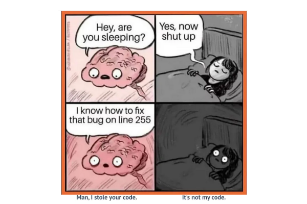
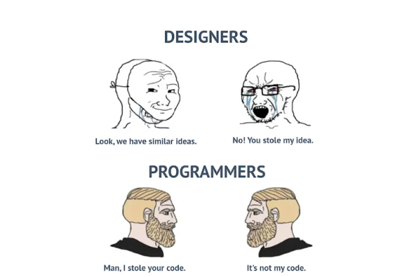

Когда после десятого проекта понимаешь, что баги — это не проблема языка. Кроме некоторых случаев с JavaScript
Когда мозг весь день молчал, а в 3 часа ночи решил: «Я знаю, где ошибка»
Разница в профессиональном менталитете
Разработчики часто забывают использовать JSON.parse после JSON.stringify